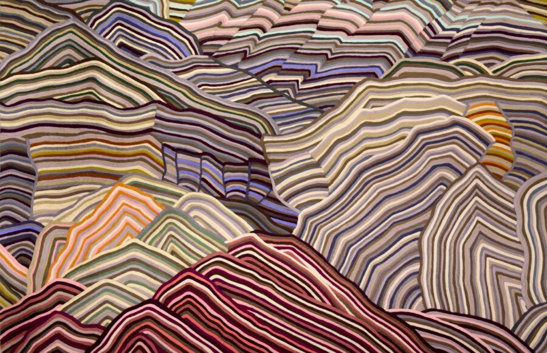

Cheryl Pope: ALL THERE IS
moniquemeloche is pleased to present ALL THERE IS, an exhibition of new works by Cheryl Pope. Pope is an interdisciplinary visual artist whose intimate studio practice centers on textile “paintings.” Working with needle-punched wool roving on cashmere, Pope creates richly tactile works that translate the language of painting into fiber, using material, texture, and color to explore memory, relationships, and the poetics of everyday life. For the artist’s seventh solo exhibition at the gallery, ALL THERE IS debuts a new body of landscape works that explore the spiritual and emotional resonance of the land as a site of recollection, silence, and shared human experience.
The artist began this series after a residency at the Contemporary African Museum in Marrakech, Morocco, where travels to the Atlas Mountains and desert terrain evoked an immediate sense of recognition and belonging. Upon returning home, Pope continued her journey to the Abiquiú region of New Mexico, a site that carries familial resonance for the artist, where summers were spent by her father and grandmother. Together, these experiences, while separated by geography, awakened a mystical stillness inside the body, initiating a broader connection to the universality of the landscape. While Pope’s earlier works centered the physical body as a site of identity, vulnerability, and care, from her early work with underrepresented youth, to deeply personal reflections on love and family, to her celebrations of the female body, these new landscapes suggest the body has not disappeared but expanded, shifting from the visibility of the figure toward a more esoteric understanding of how human experience is embedded within the landscape.
Drawing from modernist painting, slow cinema, and contemplative poetry, the works approach landscape as a site where emotional, geological, and psychological states converge. Art historically, Pope draws from traditions that understand landscape not as scenery but as a living presence. Like Georgia O’Keefe, Pope’s landscapes strip away narrative figures to focus instead on the inner architecture of place. The compositional clarity of Pope’s landscapes also recalls Roger Brown’s distinctive visual language, particularly his use of stacked horizons, simplified forms, and rhythmic patterning. Materially and formally, the works embrace a process of attentive listening. Shapes derived from photographic studies are reworked through memory and intuition, becoming compositions that emphasize rhythm, vibration, and the relational nature of color and texture. Unfolding in undulating strata, layers of ochre, sand, umber, and clay mix with unexpected bands of lavender, pink, sage, and deep green, suggesting both environmental time and a thoughtful color sensibility. The artist describes the process as closer to composing music than painting: each mountain functions as an instrument, its tones and tactile surfaces forming part of a larger symphony of land, light, and archeological record. Here, Pope’s wool fibers act almost as sediment deposits, a buildup only achieved by slow labor – literal time embedded in material.
The title, ALL THERE IS, refers to a personal family story; words that were carved by the artist’s grandmother inside the wedding band of her grandfather. These words are a small but profound gesture that holds both intimacy and universality, and a candid confrontation to the bare truth of it all: that beneath the layers of narrative, culture, and history, the land remains vast, silent, and enduring. Here, Pope translates the emotional concerns that have long defined her practice, from intimacy, vulnerability, caregiving, and connection into geological form, where layered terrains become metaphors for the ways love accumulates, transforms, and endures.